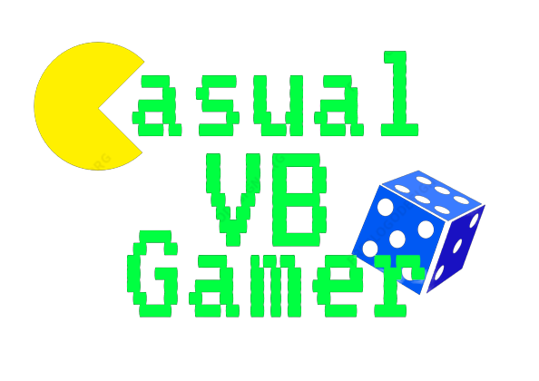
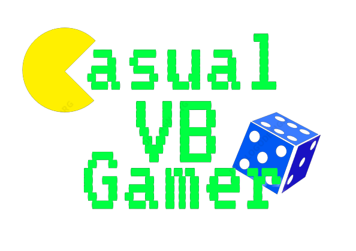

Welcome to Casual VB Gamer (CVBG)!
This website is a great place to get an honest review about video games and board games from a casual gamer who enjoys play games just for fun. I will give my reviews and the pros and cons for each game.